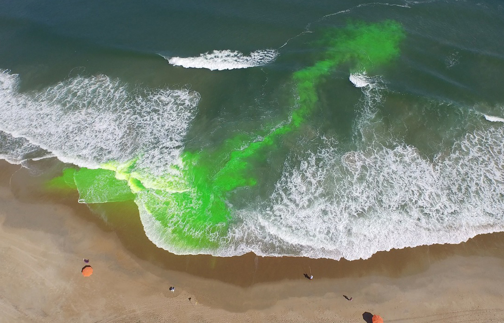
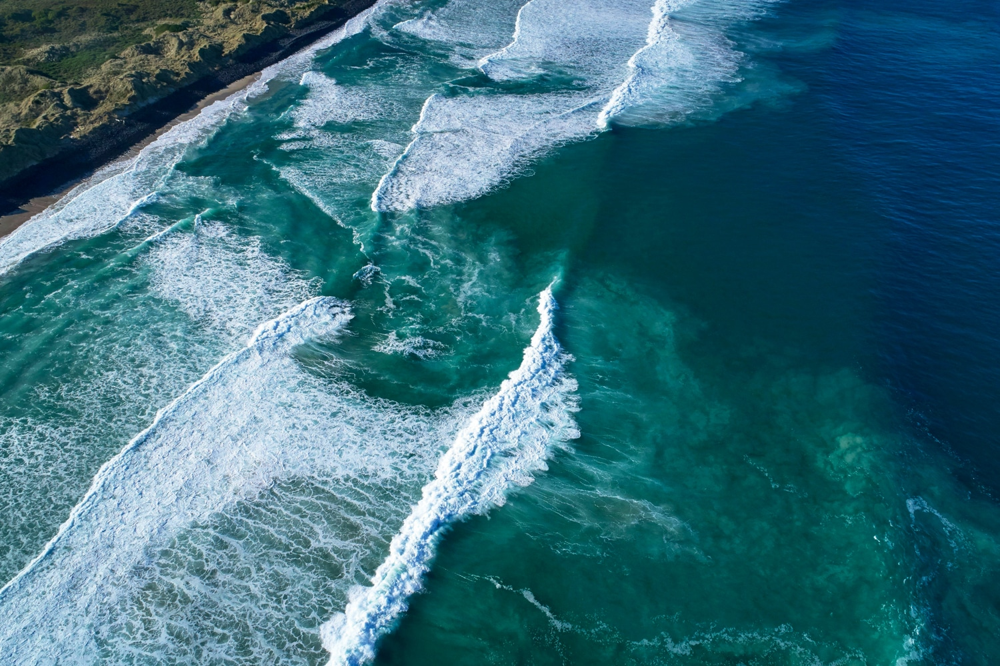
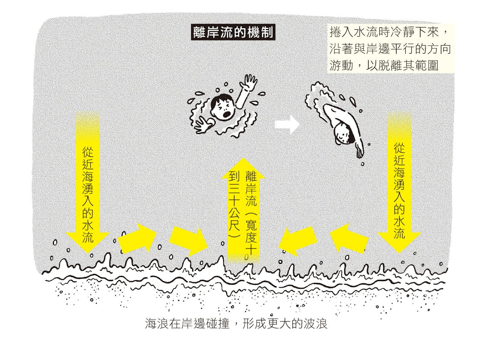

离岸流（rip current）是一股从海岸向外海方向快速流动的狭窄水流。它是全球海滩溺水的首要原因，每年造成大量游泳者遇险。

离岸流
离岸流的水流速度可以达到每小时13公里，远远超过大多数游泳者的游泳速度。一旦被卷入离岸流，游泳者很难直接游回岸边，容易感到恐慌和疲劳，从而增加溺水风险。
离岸流的常发季节是夏季，尤其在退潮时，因为退潮会增强水流的力量，使离岸流更强劲。
离岸流是如何形成的
当海浪把海水推向岸边后，这些水需要找到回流的通道。当水流集中通过海床上的缺口或两道沙坝之间时，就会形成一条向外海的强劲水流。
如何识别离岸流
- 一段海水颜色比周围更深，说明该处更深
- 海面有一条相对平静、波浪较少的带状区域
- 有泡沫、海草或泥沙持续向外海方向漂移

离岸流通常呈现为一条狭窄的水流通道，宽度约为10至30米，长度可达数百米。它们通常位于海滩的中间或两侧，尤其是在有沙坝、沙洲或礁石的地方。
离岸流的危险性
离岸流的水流速度可以达到每小时8英里（约13公里），远远超过大多数游泳者的游泳速度。一旦被卷入离岸流，游泳者很难直接游回岸边，容易感到恐慌和疲劳，从而增加溺水风险。
离岸流是全球海滩溺水的首要原因，每年造成大量游泳者遇险。根据美国国家海洋和大气管理局（NOAA）的数据，离岸流每年导致约100人死亡，数千人被救援。
离岸流常见发生地点
离岸流可以在任何有海浪的海滩形成，但更常见于以下地点：
- 有沙坝或沙洲的海滩
- 有河口或海湾的海滩
- 有礁石或码头的海滩
在中国，常见离岸流发生地点包括：
- 汕尾、十里银滩（广东省）
- 厦门环岛路周边、福州长乐(福建省)
- 大东海、清水湾（海南省）
离岸流的危险性
离岸流的水流速度可以达到每小时8英里（约13公里），远远超过大多数游泳者的游泳速度。一旦被卷入离岸流，游泳者很难直接游回岸边，容易感到恐慌和疲劳，从而增加溺水风险。
离岸流是全球海滩溺水的首要原因，每年造成大量游泳者遇险。根据美国国家海洋和大气管理局（NOAA）的数据，离岸流每年导致约100人死亡，数千人被救援。
如果被卷入离岸流该怎么办
- 保持冷静，避免恐慌
- 不要试图直接游回岸边，这会消耗过多体力
- 顺着离岸流的方向游泳，尝试游向两侧，寻找离岸流的边缘
- 如果无法脱离离岸流，保持漂浮，等待救援

图：羽根田治,《這樣會死！戶外活動的離奇事件簿：日本亞馬遜爆紅話題書！戶外愛好者必須內建的49個避險指南》,譯者：鍾雅茜
如果看到有人被卷入离岸流，应该立即呼救并寻求救生员的帮助。不要试图自己下水救人，因为这可能会增加更多人的风险。
← 返回首页